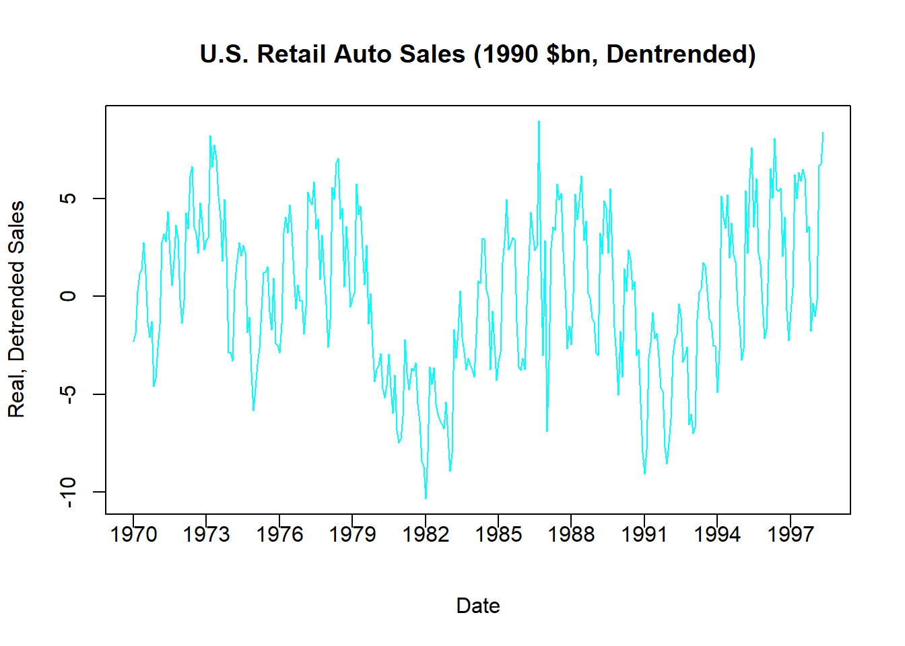

8.4 A Concluding Application
Here is where we continue to answer our question: What explains the median starting salary of a class of law students?
Our multiple PRF will now consider a measure of student quality (mean LSAT score) and a measure os school quality (the school rank) in explaining the median starting salary of a graduating class of law students.
\[SALARY_i = \beta_0 + \beta_1 \; LSAT_i + \beta_2 \; RANK_i + \varepsilon_i\]
We use the same data as before and estimate our SRF.
library(readxl)
LAW <- read_excel("data/LAW.xlsx")
par(mfrow = c(1,2))
plot(LAW$LSAT,LAW$SALARY,
cex = 1,pch=20,col = "blue",
xlab = "LSAT (points)",
ylab = "Starting Salary (dollars)")
plot(LAW$RANK,LAW$SALARY,
cex = 1,pch=20,col = "green",
xlab = "rank (1=best)",
ylab = "Starting Salary (dollars)")\[SALARY_i = \hat\beta_0 + \hat\beta_1 \; LSAT_i + \hat\beta_2 \; RANK_i + e_i\]
| Estimate | Std. Error | t value | Pr(>|t|) | |
|---|---|---|---|---|
| (Intercept) | -57551 | 26386 | -2.181 | 0.03086 |
| LSAT | 693.1 | 160.8 | 4.309 | 3.086e-05 |
| RANK | -158.9 | 15.05 | -10.56 | 1.673e-19 |
| Observations | Residual Std. Error | \(R^2\) | Adjusted \(R^2\) |
|---|---|---|---|
| 142 | 6130 | 0.7531 | 0.7495 |
Interpretation
Our interpretations should be fairly formulaic by now:
Intercept term:
\[\hat\beta_0 = -57550.6\]
The expected median starting salary of a law class when average LSAT score is ZERO and the school is ranked ZERO.39
Slope with respect to LSAT:
\[\frac{\Delta\widehat{SALARY}_i}{\Delta LSAT} = \hat\beta_1 = 693.06\]
Holding the school rank constant, a one-point increase in average LSAT score will result in a 693.06 dollar increase in median starting salary, on average.
This would technically imply that if you looked at two graduating classes of lawyers from the same school, but one of them had a one-point higher LSAT score.
Slope with respect to RANK:
\[\frac{\Delta\widehat{SALARY}_i}{\Delta RANK} = \hat\beta_2 = -158.89\]
Holding LSAT scores constant, a one-point increase school rank will result in a -158.89 dollar change in median starting salary, on average.
This would technically imply that if you looked at two graduating classes with the same LSAT score, but one class was from a school directly below the other in ranking.
Confidence Intervals
## 2.5 % 97.5 %
## (Intercept) -109721.1231 -5380.0697
## LSAT 375.0305 1011.0874
## RANK -188.6394 -129.1387We can quickly compute confidence intervals regarding where we believe the population relationships will be.
\[Pr(375.03 \leq \beta_1 \leq 1011.09)=0.95\]
This confidence interval states that we are 95% confident that the increase in starting salary in response to a one-point increase in LSAT scores (holding rank constant) will be between 375.03 and 1011.09 dollars.
\[Pr(-188.64 \leq \beta_2 \leq -129.14)=0.95\]
This confidence interval states that we are 95% confident that the decrease in starting salary in response to going to a school one step down in ranking (holding LSAT constant) will be between 129.14 and 188.64 dollars.40
Hypothesis Tests
Two-Sided Hypothesis Test
Suppose someone claims that an additional LSAT point resulted in a $900 increase in a lawyer’s average starting salary.
This nonarbitrary statement on what might be going on in the population can be tested using the following null and alternative hypotheses:
\[H_0: \beta_1 = 900 \quad vs \quad H_1: \beta_1 \neq 900\]
With the null in hand, we can then proceed to calculate the test statistic under the null.
The formula is always the same:
\[t_{stat} = \frac{\hat{\beta}_1 - \beta_1}{S_{\hat{\beta}_1}}\] \[t_{stat} = \frac{693.06 - 900}{160.85}= -1.29\]
Where this test statistic is drawn from a Student’s t distribution with 139 degrees of freedom. \((df = n-k-1 = 142-2-1 = 139)\)
Finally, since this is a two-sided test with a negative value for a test statistic under the null. We calculate the p-value of the test by doubling the area to the left of the test statistic. Hence, lower.tail = TRUE.

## [1] 0.2017446\[P = 0.2 \rightarrow (1-P) = 0.8\]
We can reject the null with at most 80 % Confidence.
One-Sided Hypothesis Test
Suppose someone claims that an additional LSAT point resulted in more than a $400 increase in a lawyer’s average starting salary.
This is another nonarbitrary statement, but there is a suggested range and not a specific value. This is why the test takes the form of a one-sided hypothesis test.
\[H_0: \beta_1 \leq 400 \quad vs \quad H_1: \beta_1 > 400\]
Furthermore, since the null hypothesis is pointing to the right, this is a right-tail test.41
We calculate our test statistic as before.
\[t_{stat} = \frac{\hat{\beta}_1 - \beta_1}{S_{\hat{\beta}_1}} = \frac{693.06 - 400}{160.85}=1.82\]
Since this is a right-tailed test, out p-value is simply the area to the right of our test statistic. Hence, lower.tail = FALSE.
## [1] 0.03599044We can reject the null with at most 96.4% confidence.
Forecasts
Finally, suppose you were interested in the median starting salary of a law class that received a median LSAT of 160 and went to the 10th best law school (rank = 10)?
\[SALARY_i = \beta_0 + \beta_1 \; LSAT_i + \beta_2 \; RANK_i + \varepsilon_i\]
A point estimate simply involves plugging these values for the independent variables into our estimated SRF (and setting the error term to zero).
\[\widehat{SALARY} = \hat{\beta}_0 + \hat{\beta}_1 \; LSAT + \hat{\beta}_2 \; RANK\] \[\widehat{SALARY} = -57550.6 + 693.06 \times 160 -158.89 \times 10\] \[\widehat{SALARY} = \$ 51,749.95\]
## 1
## 51749.95This point estimate is our conditional expectation given the sample coefficients. As we saw with confidence intervals, the population coefficients are not exactly known. Therefore, the conditional expectation in the population is not exactly known either. We therefore build confidence intervals around our point estimates to get an idea of where the conditional expectation will be in the population.
A confidence interval around a mean response
What is the expected median starting salary of all law classes graduating from the 10th best school with an average LSAT of 160 in the population?
Using the formula laid out above (as well as letting R do the work):
## fit lwr upr
## 1 51749.95 49693.25 53806.64\[P \left(49,693 \leq \mu_{Y|X} \leq 53,807 \right) = 0.95\]
With 95% confidence, given a graduating class with a median LSAT of 160 graduating from the 10th best law school, the mean starting salary is between $49,693 and $53,807.
A prediction interval around an individual response
What is the expected median starting salary of a single law class graduating from the 10th best school with an average LSAT of 160 in the population?
Using the formula laid out above (as well as letting R do the work):
## fit lwr upr
## 1 51749.95 39457.08 64042.81\[P \left(39,457 \leq Y_X \leq 64,043 \right) = 0.95\]
With 95% confidence, a graduating class with a median LSAT of 160 graduating from the 10th best law school will have a starting salary is between $39,457 and $64,043.
Note: that a school cannot be ranked zero in this dataset because every school in it is ranked. This interpretation is therefore nonesensical.↩︎
Note that the negative slope means a negative change or a decrease. This means you have multiple ways of stating the same thing.↩︎
See the earlier chapter in MBA 8370 for a more formal explanation.↩︎